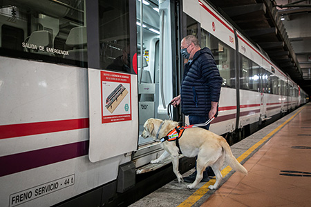
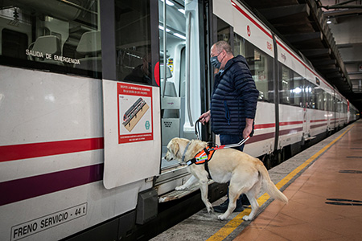
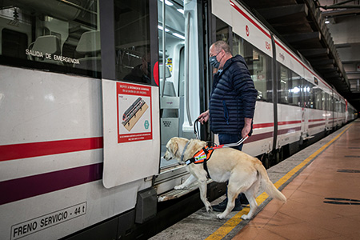

Al colaborar con nosotros podrás facilitar al futuro perro guía a introducirse en lo que será su día a día:
Facilitar la entrada al transporte público,subir en escaleras mecánicas,guiar en los pasos de cebra o incluso en asistir a personas con autismo.

En los siguientes videos tendrás más información detallada sobre nuestra labor: